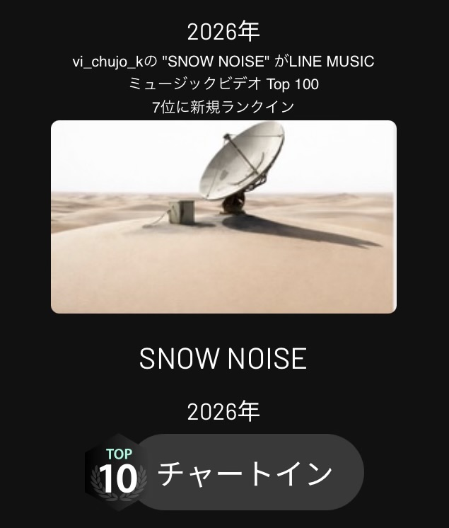

I hope to see you on various 🎧 music platforms, streaming services, and social media. If you like my work, please give it a “like,” “favorite,” or “follow.” Your support is what keeps me going!
各🎧music配信､ストリーミング､SNSでお会い出来ると思いますが､作品が良ければ是非”いいね” “お気に入り” “フォロー”お願い致します。皆さんのお力添えが原動力となります！
vj_chujo_k is a multi-creator. A multi-discipline artist and producer who embodies "Physics × Music × Art." Free from genre constraints, they create versatile soundscapes through a deeply cinematic lens, bringing intricate sci-fi and cyberpunk worlds to life. While fully capable of crafting everything entirely solo—from songwriting to full video production—they are currently opening doors to new creative potential by actively collaborating with fellow creators, artists, and musicians.
「物理×音楽×アート」を体現するマルチクリエイター／DTM作曲家。ジャンルの境界線を持たず、映像的アプローチから多彩な楽曲を生み出す。緻密なSF・サイバーパンク的世界観や独自のコンセプトを、音と映像の高度な融合によって立体的に表現。作詞作曲、歌唱から映像制作までを独力で完結できる確かなスキルを持ちながらも、現在は様々なクリエイターやアーティスト、音楽家とのコラボレーションを精力的に行い、クリエイティブの新たな可能性を切り開いている。